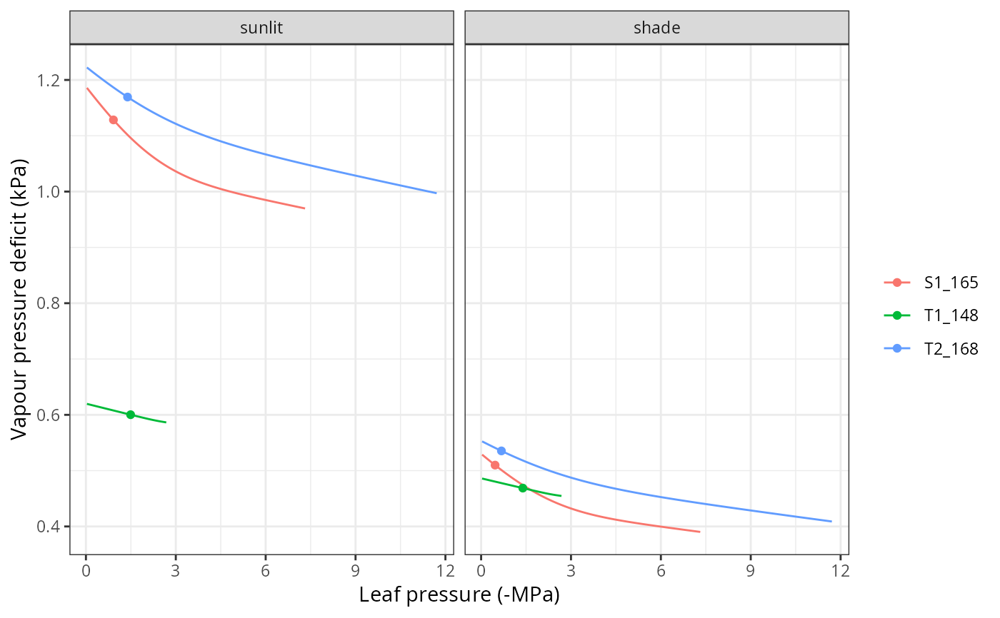

Stomatal regulation
Source:R/RcppExports.R, R/transp_stomatalRegulationPlot.R
transp_stomatalregulation.RdSet of high-level functions used in the calculation of stomatal conductance and transpiration.
Function transp_profitMaximization calculates gain and cost functions,
as well as profit maximization from supply and photosynthesis input functions.
Function transp_stomatalRegulationPlot produces a plot with the cohort supply functions against water potential
and a plot with the cohort photosynthesis functions against water potential, both with the maximum profit values indicated.
Usage
transp_profitMaximization(
supplyFunction,
photosynthesisFunction,
Gswmin,
Gswmax
)
transp_stomatalRegulationPlot(
x,
meteo,
day,
timestep,
latitude,
elevation,
slope = NA,
aspect = NA,
type = "E"
)Arguments
- supplyFunction
Water supply function (see
hydraulics_supplyFunctionNetwork).- photosynthesisFunction
Function returned by
photo_photosynthesisFunction().- Gswmin, Gswmax
Minimum and maximum stomatal conductance to water vapour (mol·m-2·s-1).
- x
An object of class
spwbInputbuilt using the 'Sperry' transpiration mode.- meteo
A data frame with daily meteorological data series (see
spwb).- day
An integer to identify a day (a row) within
meteo.- timestep
An integer between 1 and
ndailystepsspecified inx(seedefaultControl).- latitude
Latitude (in degrees).
- elevation, slope, aspect
Elevation above sea level (in m), slope (in degrees) and aspect (in degrees from North).
- type
A string with plot type, either
"E"(transpiration flow),"Ag"(gross photosynthesis),"An"(net photosynthesis),"Gsw"(stomatal conductance to water vapour),"T"(temperature) or"VPD"(leaf vapour pressure deficit).
Value
Function transp_profitMaximization returns a list with the following elements:
Cost: Cost function [0-1].Gain: Gain function [0-1].Profit: Profit function [0-1].iMaxProfit: Index corresponding to maximum profit (starting from 0).
References
Sperry, J. S., M. D. Venturas, W. R. L. Anderegg, M. Mencuccini, D. S. Mackay, Y. Wang, and D. M. Love. 2017. Predicting stomatal responses to the environment from the optimization of photosynthetic gain and hydraulic cost. Plant Cell and Environment 40, 816-830 (doi: 10.1111/pce.12852).
Examples
#Load example daily meteorological data
data(examplemeteo)
#Load example plot plant data
data(exampleforest)
#Default species parameterization
data(SpParamsMED)
#Define soil with default soil params (4 layers)
examplesoil <- defaultSoilParams(4)
#Initialize control parameters
control <- defaultControl(transpirationMode="Sperry")
#Initialize input
x2 <- spwbInput(exampleforest,examplesoil, SpParamsMED, control)
# Stomatal VPD curve and chosen value for the 12th time step at day 100
transp_stomatalRegulationPlot(x2, examplemeteo, day=100, timestep = 12,
latitude = 41.82592, elevation = 100, type="VPD")
